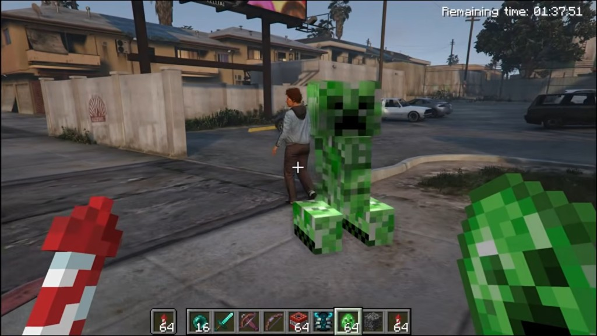

Passthrough Mods: Wait, AI Can Merge Games Now?
Over the past month, clips of one game running inside another have swept through gaming feeds1. One of the first, posted on 29 September, shows Minecraft’s Steve taking on boss battles inside Elden Ring’s Lands Between, with a working interface and apparent interaction between the two games. As someone interested in game modding, I could not stop admiring the clips and wondering how they worked, and why this was happening now.
I put the entire of game minecraft into elden ring as mod. its runs on Mac.
— @TobynJacobs September 29, 2026
An unexpected mashup
What impressed me was not simply seeing one game’s characters appear inside another. It was the possibility of connecting two programs that were never designed to work together. Imagine chiseling two stone slabs until their surfaces fit. Each notch is a small plugin inside a game, and the connection between the slabs is a data link, such as a local socket or a region of shared memory. The underlying modding techniques are not new. What seems to have changed is how little effort it can take to coordinate them with AI agents2 3. More mashups followed within days, and the trend took off4 5.
Following that trail led me to one public project I could examine in more detail: Minecraft inside Grand Theft Auto V (GTA V)6. Its development log describes how the two games exchange state and combine their images. The log also describes the agent testing against a stand-in for GTA V while the actual game was still installing. The developer remained involved, but the project offers a concrete example of agentic engineering: an AI agent that writes code, runs it, and tests the result as part of an iterative development process. I got so hooked that minutes turned into hours, and a case study took shape before I knew it.
Here is what I learned, retold in a more linear order than I found it. First, we will define passthrough modding and distinguish it from earlier forms of cross-game integration. Then we will take apart the architecture and look at the problems it has to solve. With that foundation, we can assess what the demos actually establish, examine what AI agents contributed, and consider what happens when ambitious experiments become cheaper to implement.
What’s a passthrough mod?
A mod (short for modification) changes a game after it ships, adding or altering things such as items, maps, gameplay, or missions. The game-modding scene also includes cross-game modding (also known as crossover or mashup modding1), where content or behavior from one game is brought into another. People do this to combine things each game does well, such as using one game’s strategy campaign with another game’s battle simulation.
The examples below form my attempt at a taxonomy of ways games can be combined. Please see them as useful navigation cues instead of exclusive stages in a strict progression: a project can mix techniques from more than one category7.
- Rebuild in the host’s engine: Content or mechanics from one game are recreated using the host game’s engine and modding tools. The original game does not need to run. Example: Halocraft, which brings Minecraft-like voxel ideas into Halo 3’s environment.
- New runtime: A separate engine or runtime reads assets or other data from multiple games. The original games do not need to be running. Example: a Rust rewrite that mixes Modern Warfare 2, Skate 3, and Minecraft.
- Pixel buffer: One game displays the other game’s rendered image, often on an in-world screen, and may forward player input. The host does not necessarily understand the guest’s gameplay state. Example: virtual machines, Doom inside Minecraft.
- Handoff at mechanics boundary: One game passes a bounded piece of state or responsibility to another, then receives a result. For example, a Crusader Kings 3 mod lets players fight battles in Mount & Blade II: Bannerlord before returning the outcome to the strategy game8.
- Live events: Two games exchange selected items or events while their worlds remain separate. Example: Archipelago9, a multiworld randomizer framework with up to 70 supported games.
1. REBUILD IN ENGINE 2. NEW RUNTIME
.--------------------------. .--------------------------.
| ported rewritten | | |
| [Asset A] [Logic A] | | [Asset A] [Asset B] |
| \ / | | \ / |
| v v | | v v |
| .------------------. | | .------------------. |
| | Engine B | | | | New runtime | |
| '------------------' | | '------------------' |
'--------------------------' '--------------------------'
3. PIXEL BUFFER 4. HANDOFF AT BOUNDARY
.--------------------------. .--------------------------.
| [Game A (guest)] | | state A |
| | | | [Game A] ----------. |
| | ^ | | | |
| pixels | | input | | ^ v |
| v | | | | |
| | | | '---------- [Game B] |
| [Game B (host)] | | state B |
'--------------------------' '--------------------------'
5. LIVE EVENTS 6. PASSTHROUGH MOD
.--------------------------. .--------------------------.
| | | [Game A] <----> [Game B] |
| [Game A] <----> [Game B] | | \ sync / |
| : items : | | \ / |
| : : | | v v |
| World A World B | | .---------------. |
| (separate worlds) | | | Shared scene | |
| | | '---------------' |
'--------------------------' '--------------------------'
A passthrough mod, the most recent category, has three defining characteristics. Both games must be running as their own programs with separate execution and core simulation systems. They may still need plugins, hooks, patches, or disabled features to make the integration possible. While the player interacts, the games keep exchanging information in both directions. The integration layer translates between their respective states and events. Finally, their outputs are brought together into a shared presentation. Depending on the implementation, this may mean a common visual scene, some shared spatial behaviors, or deeper gameplay interactions. Those are different degrees of integration: combining two images does not, by itself, create one shared simulation. The distinction matters because similar-looking clips can be built in very different ways7.
A design document for SkyCraft makes the preservation of each game’s mechanics an explicit goal: if the developers find themselves re-implementing one game’s mechanic inside the other’s code, they consider the design to have gone wrong10. The intended approach is to keep each game’s own logic and use small mods to translate information between them.
Early projects described as meeting this model include SkyCraft (Minecraft inside Skyrim) and Minecraft inside GTA V. Later examples include OWCraft (Minecraft inside Outer Wilds)11, RE4Craft (Minecraft inside Resident Evil 4)12, and a bridge project for Elden Ring and Monster Hunter: World13. I found no verified build with three games exchanging gameplay state this way, so whether it scales past two stays open. The Elden Ring clip that opened this post does not have an inspectable implementation, and is yet to be confirmed as a passthrough build2.
For the technical discussion that follows, I focus on SkyCraft and the GTA V build, which are open-source.
Taking it apart
Getting access to a game’s internals is the first challenge. Most games are not designed to expose their state to another running program (obviously!), so passthrough projects depend on community modding tools to pry their way in.
Different games expose that access in different ways. Skyrim has the Skyrim Script Extender (SKSE)14, GTA V has ScriptHookV15, and Minecraft has the Fabric16 mod loader. Although these are not the same kind of tool, they provide different mechanisms for extending or interacting with a game. Critically, they allow code running in, or alongside, the original game process to make the integration possible. Once that access exists, a plugin may be able to inspect player state, move objects, or respond to events such as hits. The exact capabilities depend on the game and the modding interface available.
ReShade17 works at a different layer. It intercepts graphics API operations and applies post-processing effects to a game’s rendered output. Its access to depth information and other rendering resources depends on the graphics API, the game, and the resources exposed by the rendering pipeline. That makes it useful for some forms of external compositing, but it is not a universal window into every game frame.
Who owns what?
With a way into each game, the next question is how to divide responsibilities. Usually, the host is the game whose window and environment form the main presentation: its terrain, buildings, characters, and quests. The guest contributes some of the player mechanics or other systems that are brought into that environment.
In SkyCraft, for example, Minecraft supplies the player and gameplay logic while Skyrim supplies the surrounding world10. Skyrim’s own character (now inert) syncs the movement every frame, so guards still notice the player and quest triggers still fire. In the other direction, Minecraft needs information about Skyrim’s terrain and collision so that its player can move through the host environment. Meanwhile, Minecraft’s own unused world is set to an empty void.
GTA (host) Minecraft (guest)
.-----------------------. .-----------------------.
| | | |
| .-----------------. | | .-----------------. | |
| | ScriptHookV | socket | Fabric mod | | |
| | \ <----------> / | | \ CPU
| | > sends camera, / <----------> \ > sends blocks, | | / RAM
| | ground, keys | small pkgs | hits | | |
| '-----------------' '-----------------' | |
| | | |
| .-----------------. | | .-----------------. | |
| | GTA frame | | | | Minecraft frame | | \ GPU
| | and depth | | | | and depth | | /
| '-----------------' | | '-----------------' | |
| | | | | |
'-----------|-----------' '-----------|-----------'
| v
| .----------. |
| | shared | \ RAM
| | memory | /
| '----------' |
| |
v v
.----------------------------------------. |
| ReShade compositor | \ GPU
| depth test, relighting, reprojection | /
'----------------------------------------' |
|
v
.-----------------.
| Final frame |
'-----------------'
Communication channel
Information has to travel between two separate processes. A localhost socket is suitable for small messages or packets. Graphics are a different problem. An uncompressed 1080p frame occupies about 8.3 MB, which is nearly 500 MB/s of raw image data at 60 fps, before any transfer and synchronization overhead. For this, developers can use shared memory: a region of RAM that both processes can access.
As recorded, the GTA V build uses the socket to send camera, collision, keypresses, and projectile hits, and shared memory for the frames6. The described graphics path copies a guest frame into shared memory, after which the host-side compositor uploads it for rendering. This avoids the need to share a GPU resource directly, which requires lower-level manipulations. Meanwhile, SkyCraft’s design describes a shared-memory approach with its own messaging protocol, including ring buffers for events and a heartbeat counter10.
Coordinates and collision
The games also need a consistent way to describe where objects are and what they can collide with. Each game has its own coordinate system. They may differ in units, axis orientation, origin, or scale. A transformation is needed to map positions from one system into the other, depending on the games.
Collision creates a related problem. A character controlled by one game does not automatically know about the other game’s terrain. If the guest’s physics system cannot query the host’s environment directly, the integration may need to represent parts of that environment as stand-ins in the guest. The GTA V build describes converting between meters and Minecraft blocks and mirroring nearby ground as invisible barrier blocks6.
The renderer
The next challenge is to make two independently rendered images look like parts of one consistent scene, with three specific mismatches to resolve:
- Depth: Which objects stand in front, and which objects should they hide? A graphics pipeline can store depth information for visible pixels in a depth buffer. With proper coordinate mapping, ReShade may provide access to a game’s depth information natively. A compositor can use that information to decide which game’s pixel should appear at a given screen position.
- Lighting: Each game shades its objects by its own rules, so a guest object’s brightness would look out-of-place in the host’s scene. The fix is to relight it with the host’s lighting4 11, or by matching the brightness of the host’s finished picture (image-space correction)13.
- Timing: The two games render independently, so their frames may represent slightly different moments or camera positions. The issue is handled via depth-aware reprojection. Using the guest’s depth map, the compositor estimates where visible points sit in three-dimensional space, transforms them into the host’s current camera view, and projects them back onto the screen. Reprojection is still an approximation, so large viewpoint changes can expose missing information.

Gameplay integration
Finally, actions in one game need to have consequences in the other. This is more than forwarding data: the bridge has to translate between two different sets of gameplay rules. A position or camera angle has a relatively clear representation; a gameplay event may not. One game might represent an attack as a projectile, while another expects a hit event. One game may have health points, while the other uses a different damage model. The integration needs to decide what the event means in the receiving game and how to express it using that game’s own systems.
The result can be unusual combinations, such as a skateboard retaining its own movement physics on another game’s streets, or a shooter fighting with a different game’s map and enemies. The more the games’ mechanics differ, the more decisions the integration layer has to make.
Reality Check
A viral clip can make a technical achievement look deceptively simple. To fully verify and appreciate the engineering behind it, we would need development logs, source code, and public releases. The GTA V build, for example, has a development log describing its mechanism6, while the Elden Ring bridge had no public release when I last checked13.
What excites me is what these experiments hint at: ideas that once seemed too ambitious or expensive to attempt are becoming increasingly within reach. As tools become more capable and experimentation becomes cheaper, the boundary between an imaginative concept and a working prototype keeps moving.
The Falling Cost of Creation
Perhaps the more interesting question is not whether these projects work, but what changes when AI agents make previously demanding projects viable. As coding agents become more capable and autonomous, they have clawed their way into complex engineering and research tasks. Recent AI-assisted works have even produced notable attempts at the Navier-Stokes existence and the Riemann Hypothesis, two of the seven Millennium Prize Problems18 19. Against that backdrop, passthrough mods are just a tiny speck of what this shift might make possible.
The human role shifts along with it. Rather than building everything from the ground up, developers can focus on high-level engineering: defining the architecture, breaking down problems, setting direction, and evaluating the results. This also reshapes how we view effort and mastery. If two people achieve the same result with different effort, perhaps the real value lies in the decisions: what to build, keep, and discard.
That shift brings both opportunity and uncertainty. Lower barriers let people build things from ideas without mastering every technical skill, but will they feel the same joy of doing and pride in their craft? Learning is another open question: the burden of building is taken away, but so is the righteous struggle through which learning occurs. The difference between building something and learning by building it becomes harder to ignore.
There are also broader questions about what it means to create something with AI. Authorship becomes less clear when anyone can generate and publish code with little effort, adding to the growing flood of low-effort or barely maintained projects on GitHub. Ownership becomes convoluted when the result is layered upon open-source tools and AI-generated code, each with different licenses and intellectual property considerations. Responsibility remains with the people who choose to use, release, and maintain these creations, even when much of the autonomy was already delegated. AI may change how we make things, but it does not make these questions go away.
Closing
Passthrough mods may be one-off technical curiosities, but they show how ideas that once seemed impractical are becoming achievable with the right tools. AI is lowering the barrier between imagining something and making it real, without making creativity, judgment, or engineering any less important. There are still open questions about what this means for how we create, learn, and take responsibility for what we make. But one thing is clear: more ideas are now within reach, and it will be interesting to see what people do with that possibility.
References
-
Yahoo Tech. (2026). Vibe-Coded Mashup Mods Have Taken Over X This Week. https://tech.yahoo.com/gaming/articles/vibe-coded-mashup-mods-taken-201753974.html ↩ ↩2
-
Jacobs, T. [@TobynJacobs]. (2026, October 3). I think I’ll make a long form video on the process and how I made the Elden Ring mod [Post]. X. https://x.com/TobynJacobs/status/2106300181193031761 ↩ ↩2
-
Sheikh, R. (2026, September 30). v0.2: any agent, a shared knowledge base, and the Minecraft x GTA V example [Commit 15d6f9d]. universal-modder. https://github.com/rehan-remade/universal-modder/commit/15d6f9d ↩
-
chasmlol. (2026). SkyCraft [Computer software]. GitHub. https://github.com/chasmlol/SkyCraft ↩ ↩2
-
ryglizzy. (2026). GTA-San-AnSkateas [Computer software]. GitHub. https://github.com/ryglizzy/GTA-San-AnSkateas ↩
-
Sheikh, R. (2026, September 30). Minecraft inside GTA V (passthrough mod) [Knowledge base entry]. universal-modder. https://github.com/rehan-remade/universal-modder/blob/main/knowledge/games/gta-v/minecraft-passthrough.md ↩ ↩2 ↩3 ↩4
-
Stubblefield, C. (2026, October 1). How one game runs inside another game: The four techniques, explained. Held Games. https://heldgames.com/guides/how-one-game-runs-inside-another ↩ ↩2
-
NME. (2021, November 3). ‘Mount & Blade 2’ mod lets you fight ‘Crusader Kings 3’ battles. https://www.nme.com/news/mount-blade-2-mod-lets-you-fight-crusader-kings-3-battles-3086741 ↩
-
ArchipelagoMW. (n.d.). Archipelago [Computer software]. GitHub. https://github.com/ArchipelagoMW/Archipelago ↩
-
chasmlol. (2026, September 29). SkyCraft design doc [docs/DESIGN.md, draft v0.1]. GitHub. https://github.com/chasmlol/SkyCraft/blob/main/docs/DESIGN.md ↩ ↩2 ↩3
-
Yaekai. (2026). OWCraft [Computer software]. GitHub. https://github.com/Yaekai/OWCraft ↩ ↩2
-
Utimaa. (2026). RE4Craft [README]. GitHub. https://github.com/Utimaa/ResidentCraft4 ↩
-
justbustin. (2026). Minecraft inside Monster Hunter: World and Elden Ring (Mac + CrossOver) [README]. GitHub. https://github.com/justbustin/minecraft-crossover-bridge ↩ ↩2 ↩3
-
Patterson, I. (2026). Skyrim Script Extender (SKSE) [Computer software]. Silverlock. https://skse.silverlock.org/ ↩
-
Blade, A. (2026). Script Hook V [Computer software]. AB Software Development. https://www.dev-c.com/gtav/scripthookv/ ↩
-
FabricMC. (2026). Fabric [Computer software]. https://fabricmc.net/ ↩
-
crosire. (2026). ReShade [Computer software]. https://reshade.me/ ↩
-
Anthropic. (2026, August 10). Claude has improved on a longstanding lower bound for the fraction of zeros of the Riemann zeta function that satisfy the Riemann hypothesis. https://www.anthropic.com/research/riemann-zeta ↩